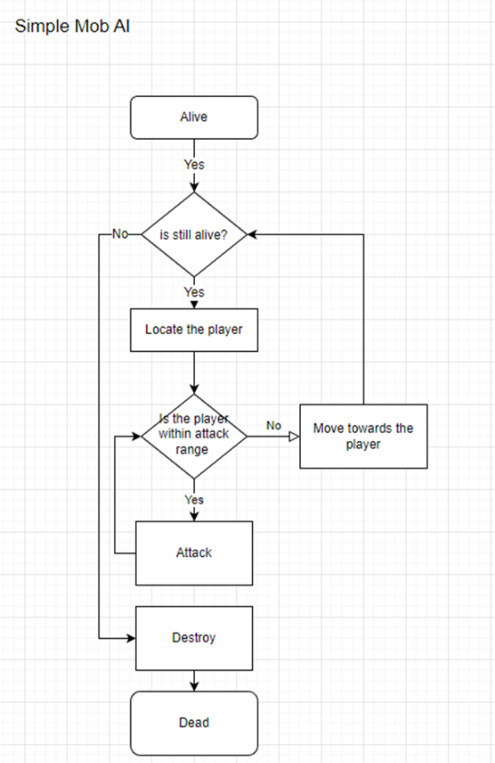
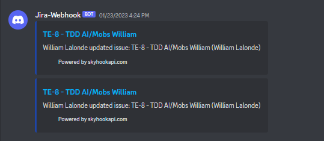
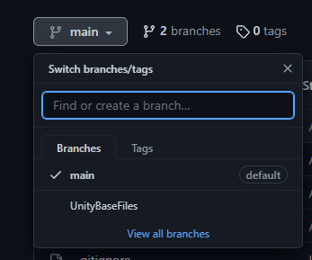
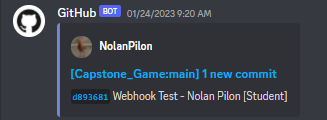

Let’s get acquainted! My name is William Lalonde, and I’ve always been interested
in 2 main things, wildlife and the behind-the-scenes of games. I would often
spend my time either learning about animals or learning ways to break my
favorite game for fun.
Because of one of those key interests, I would often show
my friends the interesting ways I broke games ranging from Mario Sunshine to
Valhiem. This led to me testing games for friends, finding strange oversights that
allowed for all the wrong things, to help them find possible solutions in C++, C#.
Enrolling into a Game Programming course was the next logical step, so I did just
that at St.Laurence College. I’m already in my final year!
Some may say that programming is extremely frustrating from time to time,
but that's not how I see it; the challenge is what I enjoy about it.
Finding the solution to a problem that’s had me stumped is comparable to
winning against a friend at his own game.
Upon graduation in May, I plan on joining the game industry as a QA junior or a programmer junior.


Week 1-2
Week 2 of the capstone project was mostly set up for the project still. The project being a 2d platformer with fast paced movement, that promotes the player to go faster and faster. The gameplay of the game will be a mashup of Cup head and
Ori and the blind forest. Now that we (the group) now know what kind of game to make, let’s talk about our process.
Monday
We started that class by touching up the GDD (Game Design Documents) by listing to the professors’ inputs that he previously left on it. A good portion of those comments provided told us to clarify details. Working on the GDD ended reassuring
me since Pamela, Hyangsu and Kaleb started giving their input. During the previous week getting a response from Pamela, Hyangsu or Kaleb was rare occurrence, making the class boring.
Thursday
This class the group worked on their respective TDD (Technical design document). These document are made to create a easier work flow during the creating of the game. In a TDD there is normally 5 parts, a quick description of what your
making, technical challenges that your going to encounter, UML diagram which breaks down the necessary class with their properties, Flow chart which helps developers have a understanding of how the thing works and a task list which breaks
down the necessary tasks needed to make the thing.
While the group was working on the TDD, I was making the Jira webhook.
The purpose of this webhook was to notify the group in discord every time the Kanban board was updated. This seemed easy like a project that shouldn’t take a lot of time to make, and it is if you’re the admin of the Kanban board. If you
couldn’t guess, I wasn’t, this made a quick 20 minute learning process into an 1 hour process. Normally to make a webhook all you needed to do was, make a webhook bot in discord under the webhook tab and copy its URL. Then slap that URL into
https://skyhook.glitch.me/ and modify it to suit your need. Then finally go to your Jira under the webhook tab and paste the URL in the URL tab with the capability you want enabled.
Without Administration you can’t get into the discord or Jira webhook tabs. This took longer than I like to admit figure out, but in the end it works.


Week 3
Week 3 was a revision week; everyone was finishing up their respective TDD. Hyangsu was finishing up the saving system TDD, Kaleb was finishing up the UI TDD, Nolan was finishing up the combat TDD , Pamela was finishing up the audio TDD,
and I was finishing up the AI/Mobs TDD.
Monday
For Monday’s work period, I finished my TDD, and ended up trouble shooting the GitHub Webhook with Nolan. The issue at hand was the fact that he could download from the git repository but could not upload anything to it. Turns out the issue
was that git defaulted the branch to master when you download from it for the first time. The reason why that’s an issue, is because we don’t have a master branch in our repository. So, when Nolan tries to upload to the repository it would
look for a non-existing branch. The fix for it was simple, just run the “git checkout main”, this would change the branch of the local repository to master (an existing branch).
Thursday
Thursday quick day, it was a snowstorm, so the group wanted to get the work done and get home before the roads get worse than it already was. We couldn’t work from home since the files that we needed (the TDD) was on the school’s computers…
Either way Thursday, the group went around reviewing everyone’s TDD. At the end of the review, I don’t think anyone had to critiqued anything. I’m not sure if its because none of us felt comfortable to critiquing each other’s work or because
everyone’s TDD was superb. Must be the latter, since the groups TDD’s did indeed look good.
With the TDD’s essentially finished, next week is when we start working on the game. Week 4 is going to be the group’s first sprint. Sprint being a time-boxed period where the team completes a set amount of work. I look forward to this, since
now we will finally be able to start making the game.